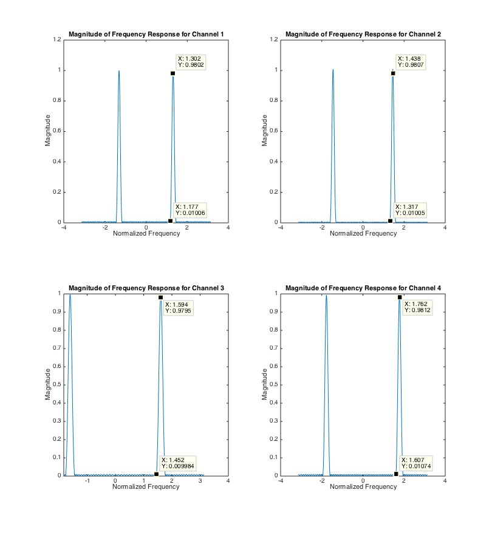
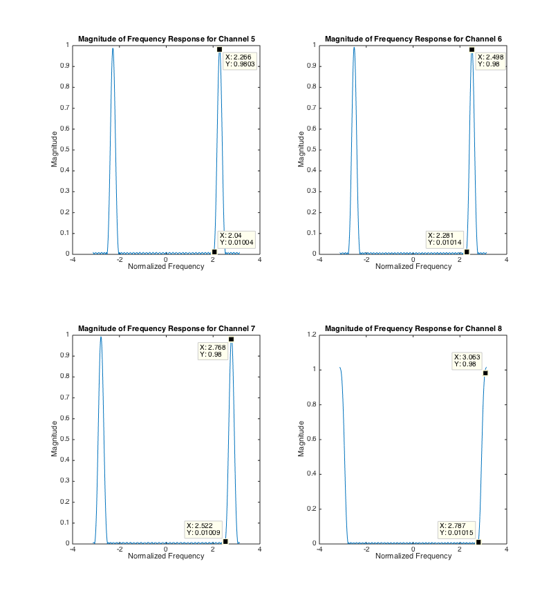
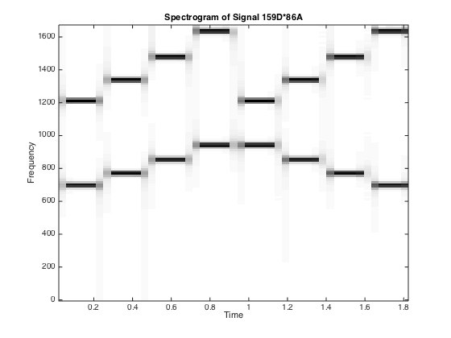
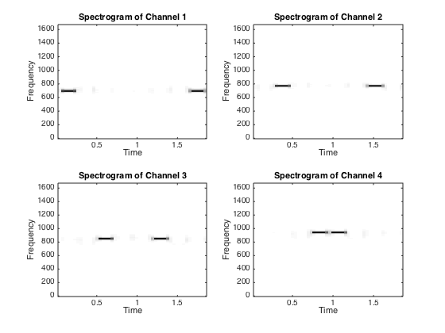
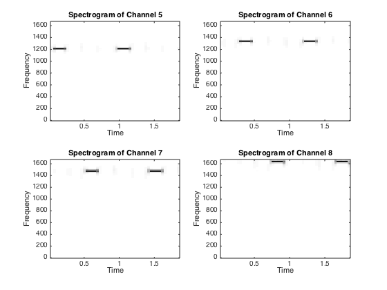
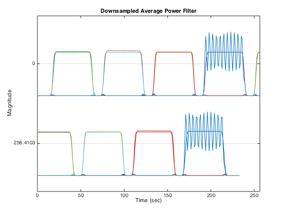

Lab_10_HW
697 770 852 941 1209 1336 1477 1633 12 13 14 16 697 1 2 3 A 770 4 5 6 B 852 7 8 9 C 941 * 0 P D
Contents
4.1 Design 8 Filters
fc = [697, 770, 852, 941, 1209, 1336, 1477, 1633]; fpdelta = 6; fpass = [fc - fpdelta;fc + fpdelta]; fs = 1/0.3e-3; delp = .02; dels = .01; fsdelta = min([abs([diff(fc),1e100]);abs([1e100,diff(fc)])]); fstop = [fc - fsdelta; fc + fsdelta]; wpass = (fpass*2*pi)/fs; wstop = (fstop*2*pi)/fs; % Correction for even and minimum order that fits specifications, % determined graphically correction = [-7,-1,-6,-6,-2,0,-3,6]; M = zeros(1,length(fc)); b = cell(1,length(fc)); for n = 1:length(fc) if(n ~= 8) [N, Fo, Ao, W] = firpmord([fstop(1,n), fpass(1,n), fpass(2,n), fstop(2,n)], [0, 1, 0], [dels, delp, dels], fs); else [N, Fo, Ao, W] = firpmord([fstop(1,n), fpass(1,n)], [0, 1], [dels, delp], fs); end M(n) = N + correction(n); b{n} = firpm(M(n), Fo, Ao, W); % if (n == 5) % figure % end % if (n <= 4) % subplot(2,2,n); % else % subplot(2,2,n-4); % end % ww = -pi:1/10000:pi; % HH = freqz(b{n}, 1, ww); % plot(ww, abs(HH)); % title(sprintf('Magnitude of Frequency Response for Channel %d', n)); % xlabel('Normalized Frequency'); % ylabel('Magnitude'); end open MagnitudeResponse1.fig open MagnitudeResponse2.fig maxdelay = max(M)/2; delay = maxdelay - M/2; maxlength = 0; for n = 1:length(fc) bf{n} = firfilt([zeros(1,delay(n)),1],b{n}); end 
4.2a
xx = DTMFdial('159D*86A', fs);
xx = DTMFdial('159D*86A', fs); figure plotspec(xx, fs); title('Spectrogram of Signal 159D*86A'); xlabel('Time'); ylabel('Frequency'); figure
4.2a Filters
for n = 1:length(fc) yy = firfilt(xx,bf{n}); if (length(yy) > maxlength) maxlength = length(yy); end if (n == 5) figure end if (n <= 4) subplot(2,2,n); else subplot(2,2,n-4); end plotspec(yy, fs); title(sprintf('Spectrogram of Channel %d', n)); xlabel('Time'); ylabel('Frequency'); end 
4.3b
Lp = round((48e-3*fs)/3); R = round(Lp/4); hh = hamming(Lp); len = round((maxlength + length(hh) - 1)/R); bfsq = cell(1,length(fc)); bfbl = cell(1,length(fc)); avgPower = zeros(len,8); figure for n = 1:length(fc) yy = firfilt(xx,bf{n}); bfsq{n} = yy.^2; bfbl{n} = firfilt(hh, bfsq{n}); pdown = bfbl{n}(1:R:end); avgPower(:,n) = [pdown, zeros(1,len-length(pdown))]; end strips(avgPower,fs/R); title('Downsampled Average Power Filter'); xlabel('Time (sec)'); ylabel('Magnitude');
4.3c
phoneNum = decodeDTMF(avgPower, fs, R);
fprintf('Decoded Phone Number is %s\n', phoneNum);
Decoded Phone Number is 159D*86A